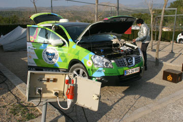
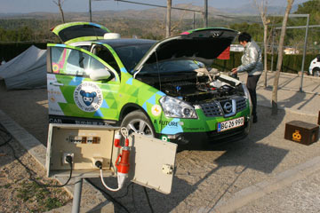

Meget forkølet tilbragte jeg dagen på hotelværelset med en lydbog i ørerne. Hjalte var ude, og fandt en garage hvor Grønne kan stå og få strøm til favørpris. Det koster ellers 34 euro i døgnet at have en bil i garage her i Barcelona, eller 3 euro i timen på gaden. Det er mere end de 27 euro vi betaler for et beskedent dobbeltværelse med bad og køkkenadgang. Kuldebølgen er forbi og vejret er igen pænt med ca 15 graders varme. imorgen er det arbejdsdag igen og vi tager kontakt med Barcelonas elprogram som gerne vil møde os her i byen.
Nina
Vi besluttede at blive en dag mere på campingpladsen. Vejret er blevet godt igen, solen skinner og bølgerne ruller ind mod den brede sandstrand. Turisterne er endnu ikke er ankommet, kun nogle fastgroede campingvogne står på pladsen. Jeg har anbragt min luftmadras under et johannasbrød-træ hvor jeg ligger og nyder udsigten med en pæn stor forkølelse. Med vores satellitantenne kan vi gå på nettet, hvor vi end er, Det gode ved Camping er, foruden naturoplevelserne, at der altid er strøm til Grønne. Campingvognene skal jo have lys i loftet og el til fjernsynet og mikrobølgeovnen. Vi er omtrent de sidste som ligger i telt. Men de næste tre dage har Hjalte bestilt hotel i Barcelona.


Dagen begyndte med lyn og torden og øsende regn. På landevejen kørte vi gennem nogle vandpytter så dybe at der stod skumsprøjt om boven på Grønne, som dog ikke lod sig påvirke. Det regnede, sneede og haglede da vi spiste frokost inde i bilen. I byen L´ Hospitalet de l´ínfant købte vi ind og fandt en campingplads ud mod vandet. Flot med hvide bølger på grønt hav. Vi rejste vores telt under nogle store træer. Køkkenbrænderen satte jeg ind i et hult træ, hvor den stod i læ. Menuen bestod af hvide bønner og blandede grøntsager med rejer. Vi kyssede hinanden og spiste maden i lommelygtens skær. Om andre ville have nydt mørket og blæsten, ved vi ikke, men vi elsker lejrlivet og synes at vi er heldige. Nina.
Om morgenen kørte alle bilerne gennem en slalombane. De store biler kom noget langsommere igennem banen end de mindre, så Grønne var ikke blandt de hurtigste, selv om Hjalte drejede på rattet som en rasende. Bagefter måtte vi tage afsked med Torben og Merete, som vi håber snart at se igen.
Deltagerne fra det lange rally og det korte rally for elektriske biler samledes til en fokost med prisuddeling i Monacos fornemme Sporting Club. Vinderne af de to løb fik nogle store trofæer og blev fotograferede. Jeg havde kjole på, og Hjalte bar slips. På bordene stod vin, men da alle skulle køre hjem, blev det ikke rigtig til nogen fest. Tilbage på hotel Fairmont pakkede vi bilen med vores gamle campingudstyr og alt det andet skrammel. På det ekstravagante hotel følte vi os som besøgende fra en fremmed planet. Først på det lille hyggelige hotel Aramis i Nice blev vi os selv igen. Men det havde været en kæmpe oplevelse at være med i rallyet, og får vi muligheden vil vi gøre det igen!
Nina
Grønne kører fantastisk godt på de små bjergveje. Den står godt fast på dækkene når den suser gennem svingene. Men Spanien er ramt af en kuldebølge. I morges da vi kravlede ud af teltet var det kun 6 graders varme. I dagens løb blev vejret dårligere, og da vi kom ned til kysten var det ikke bedre. Vi satte os på en cafe i havnen og spiste ristede sardiner i frisk vind. Derfra kørte vi til Peniscola, hvor vi indlogerede os på et hotel hvor grønne kunne lade op på en tilhørende campingplads. Vi fik en varmeovn ind på værelset, og spiste af vores egen mad. Udenfor regnede det. Jeg sad i min sovepose for at få varmen efter en kold dag.
Nina
 

Da vi vågnede i morges var Grønne fuldt opladet, så der var ingen problemer. Inden vi kørte ud af Cheste købte vi ind, og Grønne fik et længe tiltrængt bad. Først spulede Hjalte bilen, og bagefter fik den en tur igennem en vaskemaskine. Grønne strålede i solen da vi kørte op og ned ad små snoede bjergveje. Til siderne var der blomstrende mandeltræer og grågrønne oliventræer. Nogle steder var det appelsiner i tonsvis der trillede af træerne. Vores vejsidefrokost mellem de blomstrende mandeltræer var en udsøgt fornøjelse. Vi håber at holde varmen i teltet i nat.
Nina

En sen aften for en måned siden blev jeg, Grønne, kørt ind i en container i New York og spændt fast. Derefter husker jeg intet før jeg pludselig stod i Valencia. Hjalte og Nina fandt mig på en lastvogn. Så kan det nok være at jeg blev vågen. Der var stadig strøm på mine batterier, og jeg startede med det samme uden problemer. Solen skinnede og det var blevet forår. Om aftenen fandt Nina og Hjalte en campingplads. Der satte de sig ind på forsæderne og fejrede vores lykkelige gensyn med en flaske vin. De hørte musik på radioen og kaldte mig dagligstuen og søde Grønne! Jeg havde fået et nyt spansk elstik og stod og sugede strøm så det summede og kildede i alle batterierne...Og nu kan jeg igen ses på kortet på hjemmesiden. Hvad mere kan jeg ønske mig?
Grønne

Forhåbentligvar idag den sidste dag i Valencia uden Grønne. Vi tog en udflugt til lystbådehavnen, hvor de største både var på størrelse med færger. Strømstikkene på kajen var også ret store. For at prøve det tog vi metroen tilbage mod byen, og gik så til fods resten af dagen. På hjemvejen købte vi vin og brød, tomater, avocado og oliven - til et festmåltid på vores lille hotelværelse. Fra i morgen nedsætter Spanien fartgrænsen til 110 km. på motorvejene. Det er ikke noget problem for os, vi vil køre langsomt for at spare på strømmen og komme hurtigt frem. Helst på de små veje. Grønne kan godt køre 130 km i timen, men i så fald kører den ikke så langt.
Vi lykønsker Zero Emission Race !

Foto: Zero race
Forskellige små elektriske køretøjer med vekslende teams vender idag tilbage til geneve efter 28.000 km jorden rundt
Se zero-race.com
En otrolig PR för det rena elfordonet,
och de har också visad att det redan i dag
går att hitta laddplatser jorden runt !
Stor ära till Louis Palmer och hans vänner !
Valencias berømte arkitekt Santiago Calatrava har skænket sin by en samling opsigtsvækkende bygninger som indeholder museer, koncertsal, biograf, sport og et stort akvarium. Fordi det var søndag var der så lange køer, at vi opgav at komme ind. I stedet for nød vi det gode vejr udenfor. Store azurblå vandbassiner spejlede de hvide bygningers betonfiligran, runde skaller, glasruder og sukkertoppe. Midt i det hele stod en dinosaur og brølede lavmælt, det var som at vandre i en gigantisk eventyrhave. Senere satte vi os ved en cafe og spiste småbitte muslinger og blandede svampe i hvidløg. Valencia varmer op til den årlige byfest. Af og til lyder der vældige kanonader af fyrværkeri, Hver gade konkurrerer om de bedste dekorationer. Her hvor vi bor er der ophængt en skov af lysarmaturer formet som dekorative kruseduller og noder.
Afuture er startet af Søren Ekelund, en ung dansk ingeniør, som har konstrueret den fantastiske elbil, som vi er kommet til at elske. Den har kørt os gennem frygtelig varme, regn, støv, storm og mudder og bragt os til Kina. Elbiler er en investering i fremtiden som andre lande også har fået øje på. De andre elbiler på EXPO var stadig prototyper. Danmark er endnu i front, men hvor er Danmarks støtte til firmaer som Afuture der satser på fremtiden? Er en mega-stor forretning ved at gå Danmarks næse forbi?
Hjalte og Nina